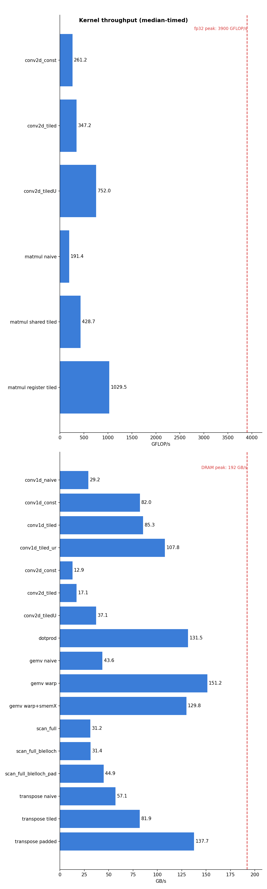

Notes from the CudaKernels project — seven kernels, measured and explained
Everything in these notes happened on one specific graphics card: a GTX 1060 Max-Q, the mobile version of NVIDIA's mid-range Pascal card from 2016. This matters more than it might seem. Performance work is always a negotiation with a particular machine's limits, and every decision in the later chapters — how big to make a tile, whether a cache will catch some reuse, whether an optimization is even worth attempting — traces back to one of the numbers in this table. It is worth pausing to understand each row before reading on.
| Property | Value | Why it matters |
|---|---|---|
| GPU | GTX 1060 Max-Q (GP106, Pascal) | compute capability 6.1 (sm_61) |
| SMs (streaming multiprocessors) | 10 | the independent "cores" that run blocks |
| fp32 peak | ~3.9 TFLOP/s | the ceiling for arithmetic |
| DRAM peak bandwidth | ~192 GB/s | the ceiling for streaming data |
| L2 cache (chip-wide) | 1.5 MB | shared by all SMs |
| Shared memory per SM | 96 KB | the pool that blocks lease slices of |
| Max threads per SM | 2048 | 64 warps; the basis for occupancy |
| Warp size | 32 | the true unit of execution |
The two numbers to memorize are the two ceilings. The card can perform at most about 3.9 trillion single-precision floating-point operations per second, and it can move at most about 192 billion bytes per second between its memory chips and the processor. Every kernel is limited by one of these two, and much of the craft in this project was figuring out which one a given kernel was pressed against — because effort spent on the wrong ceiling is wasted.
One more thing colors every measurement in these notes: this is a laptop card. Its clock speed rises and falls with temperature, so the same kernel can run ten percent faster or slower from one run to the next, and for some kernels the swing across a cold machine and a hot one reached fifty percent. Two habits protect against being fooled by this. First, every benchmark takes several samples and reports the median. Second — and more important — whenever two versions of a kernel are compared, they are run back-to-back inside the same program execution, so that both see the same thermal conditions and their ratio is trustworthy even when the absolute times are not.
When you launch a CUDA kernel, you describe the work as a grid of blocks, where each
block contains up to 1024 threads. You choose both shapes at launch time with the triple-angle-bracket
syntax: kernel<<<grid, block>>>(...). The hardware then hands out whole
blocks to the SMs, and each block stays on its SM until it finishes.
That is the programmer's view. The hardware's view contains one more level, and it is the most important idea in this entire document. Inside the SM, threads are not executed one at a time. They are bundled into groups of 32 called warps, and a warp executes as a single unit: one instruction is fetched, and all 32 threads — called lanes when we think of them this way — carry it out at the same moment, in lockstep. You write a program for one thread, but the machine only ever runs it 32 threads at a time.
Threads are packed into warps in order of their linear index within the block, and the x coordinate varies fastest. In a one-dimensional block of 256 threads, warp 0 is simply threads 0 through 31. But in a two-dimensional 16×16 block, the first 32 threads are the first two rows of the block — so a warp covers two adjacent rows of 16 threads each. Reshape the same 256 threads into a 32×8 block, and a warp becomes exactly one row of 32. This sounds like a cosmetic detail. It is not: in chapter 11, this exact difference — whether a warp lies along one row or straddles two — decides whether every shared-memory read in the kernel runs at full speed or half speed.
Lockstep execution has three consequences that echo through every kernel in Part II.
The first concerns branching. If the 32 lanes of a warp reach an if and
disagree about the condition, the warp cannot split in two — there is only one instruction stream.
Instead the hardware runs one side of the branch with the disagreeing lanes switched off, then the
other side with the roles reversed. This is called divergence, and its cost is the sum of both
paths. Often, though, the compiler avoids branching entirely using predication: every lane
executes the instruction, and a small per-lane flag decides whether the result is kept or thrown
away. Sections 2.4 through 2.7 open this machinery up in detail — predication in particular
overturns the usual intuition about what an if costs.
The second concerns memory. Because a warp issues its 32 loads together, the hardware has the opportunity to merge them into just a few memory transactions — but only if the addresses cooperate. This is called coalescing and is the subject of the next chapter.
The third is a gift: lanes of a warp can pass values to each other directly, register to register, using shuffle instructions — no memory involved at all. Chapter 6 builds a complete reduction out of them.
A single read from the card's DRAM takes several hundred clock cycles to arrive. A CPU hides such delays with large caches and clever speculation. A GPU does something simpler: it keeps many warps resident on each SM, and the moment one warp stalls waiting for memory, the SM switches to another warp that is ready. The stalled warp's delay is hidden behind other warps' work.
This only works if there are other warps to switch to. The number of warps resident on an SM — its occupancy, out of a maximum of 64 on this card — is therefore a resource in its own right. Anything that reduces it, such as a block asking for a large slice of shared memory or using many registers per thread, shrinks the SM's supply of "other work" and leaves memory delays exposed. Chapter 8 measures exactly this effect going wrong.
To understand what the SM actually does with its warps, we need to open it up. An SM's 128 arithmetic cores are not one undifferentiated pool. They are organized into four partitions of 32 cores each, and at the front of every partition sits a small unit called a warp scheduler. When blocks are placed on the SM, their warps are divided among the four schedulers — with the SM fully loaded, each scheduler owns sixteen of the 64 resident warps — and each warp belongs to its scheduler for life.
Notice how deliberately the widths line up: one scheduler issues one instruction for one warp of 32 lanes, and its partition contains exactly 32 cores to carry that instruction out. A partition is, in effect, "everything one warp-instruction needs for one cycle." The SM is best pictured not as one big processor but as four small ones side by side, each juggling its own sixteen warps.
All the work an SM ever does begins the same way. On each clock cycle, each scheduler picks one warp — from its own sixteen — whose next instruction is able to start, and starts it: hands it to the arithmetic units, or the memory units, whichever the instruction needs. That act of starting an instruction is called issuing it, and each scheduler can issue for only about one warp per cycle. The execution units downstream are wide and run in parallel, but nothing reaches them except through a scheduler, one instruction at a time. A helpful picture is a ticket window: every instruction a warp will ever execute must pass through the window, the window serves one instruction per cycle, and the queue behind it never gets to skip a turn.
Those per-cycle opportunities are called issue slots, and they are the SM's serial currency — the thing every instruction must spend exactly one of. That makes the card's total issue capacity a simple multiplication. Each scheduler starts one warp-instruction per cycle, which does the work of 32 threads; four schedulers per SM makes 128 thread-instructions per cycle; ten SMs at roughly 1.4 GHz gives about 1.8 trillion thread-instructions per second for the whole card. And that number puts a hard floor under every kernel's runtime, independent of anything memory does:
minimum time ≥ total thread-instructions ÷ 1.8 trillion per second
This floor is not a curiosity — it decided a real optimization. In chapter 11, the first 2D convolution kernel spends about ten instructions per tap, of which only one is the multiply-add doing mathematics. Multiply it out: 16.7 million pixels × 81 taps × 10 instructions is about 13.6 billion instructions, and dividing by the issue capacity gives 7.5 milliseconds — a floor the kernel could not go below even if memory were infinitely fast. The kernel measured 10.6 ms, so it was pressed against this wall, not the memory wall, and the optimizations that followed were all one campaign: make the program shorter, so fewer trips through the ticket window are needed. (A footnote for completeness: schedulers can occasionally start two instructions from the same warp in one cycle when the pair needs different execution units — so the true capacity is slightly higher — and an issued instruction then takes further cycles to complete its journey through the units. Neither detail changes the picture: issue slots are scarce and serial, and every instruction costs one.)
Now let us watch the scheduler make its choices, because the mechanism is the whole secret of GPU latency hiding. Each warp carries its own program counter — a marker pointing at the next instruction it has not yet started — and its own registers, held permanently in the partition's register file. Every cycle, the scheduler asks one question: which of my sixteen warps has a next instruction that can start right now? An instruction can start when the values it needs exist — nothing it depends on is still in flight — and the unit it needs has room. A warp that fails this test is stalled: not paused mid-action, simply ineligible this cycle.
Follow a concrete story, drawn in Figure 2.3. Warp 1's first five instructions are each ready when their turn comes, so the scheduler issues them on five consecutive cycles. Instruction 5 is a load from DRAM, and instruction 6 needs the loaded value — which will not arrive for some 400 cycles. Warp 1 is now stalled. The scheduler does not wait with it: on the very next cycle it finds another eligible warp — warp 2, say, which had been stalled and whose awaited value arrived a moment ago — and issues warp 2's next instruction, from exactly where warp 2's program counter points. Nothing is skipped and nothing repeated; stalling never loses a warp's place, because the program counter is the place. For the next four hundred cycles the scheduler weaves among its other warps, and warp 1's enormous memory delay disappears behind their work. When the value finally lands, warp 1 becomes eligible again, and some cycle soon after, instruction 6 issues as if nothing had happened.
Two properties of this dance are easy to miss and worth stating plainly.
First, switching warps costs nothing — and this is the deep difference from a CPU. When a CPU switches threads it must save one thread's registers and load another's, a matter of thousands of cycles, so it switches rarely and reluctantly. On the GPU, all sixteen warps' registers sit permanently side by side in the partition's register file, and every warp keeps its own program counter. "Switching" from warp 1 to warp 2 is nothing more than the scheduler selecting a different warp number this cycle. No state moves anywhere. That is why the scheduler can alternate between warps on back-to-back cycles, at a granularity no operating system could dream of.
Second, the choosing itself consumes no cycles. It is natural to imagine the scheduler pausing to scan its sixteen warps — but that intuition comes from software, where scheduling is a program that takes time. Here scheduling is wiring. A piece of bookkeeping hardware (traditionally called a scoreboard) maintains a running ready-or-not flag for every warp, updated by events as they happen: when warp 1 issues its load, warp 1's flag drops; four hundred cycles later, the arriving data itself flips the flag back. Nothing ever has to go looking. And picking one warp from sixteen ready-flags is a small combinational circuit that settles within a fraction of the cycle, concurrently with the current instruction being dispatched — the ticket window does not close while deciding whom to serve next. The scheduler's cost is paid in silicon and power, not in time. This is also why real scheduling policies are simple (issue from the same warp until it stalls, then move to the oldest ready one): a cleverer policy would be a bigger, slower circuit, and a 0.7-nanosecond cycle will not wait for it.
The one thing that can go wrong is an empty queue. If all sixteen flags say "not ready" — typically because too few warps are resident and they all hit their memory stalls together — the cycle's issue slot is simply lost. This is occupancy's whole story told from the scheduler's chair, and it is exactly what the GEMV experiment of chapter 8 measures: shared memory demands cut occupancy to 37.5%, each scheduler was left juggling about six warps instead of sixteen, the "is anyone ready?" question started coming up empty, and the kernel slowed down even though no single instruction got slower.
if really costs: divergence and predicationSection 2.2 introduced the two ways a warp copes with an if — divergence and
predication — in a sentence each. Now that we know what issue slots are, we can do the accounting
properly, because the two mechanisms are best understood as two ways of paying the same bill.
Start from the constraint that creates the bill. A warp has one instruction stream. Whatever its 32 lanes need done, all of it must pass through that single stream — so if lane 3 needs path A and lane 7 needs path B, the stream must contain the union of both paths, and each lane sits idle through the part that is not its own. That is the essence of divergence, and notice that it is a statement about lanes disagreeing, not about branches. No encoding can make disagreement free; the union is the union. Branching and predication are just two layouts for it:
A branch jumps over work no active lane needs. When the warp is unanimous, it executes only the side it took. When lanes disagree, the hardware runs each side in turn with the other side's lanes masked off, then reconverges.
Predication never jumps. Both sides sit in the stream unconditionally; the compare writes
a per-lane true/false flag, and every following instruction carries the flag, taking effect only in
lanes where it says yes. In the compiled 2D convolution this looks like
@!P3 LDG … followed by @!P3 FFMA … — load and multiply-add that
happen, per lane, only where flag P3 permits.
To reason about predication precisely, separate two questions that sound alike. Does the warp spend time on a predicated instruction? Always — it is next in the stream, so it consumes an issue slot (§2.5) whether the flags enable 32 lanes or none. The scheduler cannot peek at flags and skip ahead; deciding to skip is branching, the very thing predication exists to avoid. Does the instruction take effect in a given lane? Only if that lane's flag says so. A masked lane's destination register is untouched, and — crucially — a masked lane's memory access never happens: a predicated-off load sends no request to the memory system at all. This is a correctness guarantee, not just a performance fact. In chapter 11's kernel D, edge threads compute addresses that point outside the image before the bounds check decides anything; the reason that is safe is that the masked load never touches memory, so the bad address is only ever arithmetic in a register. In short: predication always spends the warp's time, but only conditionally spends each lane's effects.
if with a 2-instruction A-side and a
4-instruction B-side. Left: under predication the stream contains everything, every row costs an
issue slot for every warp, and the flags only control which lanes keep results. Right: the slot
count per warp. Predication charges the union to everyone, always; a branch charges the union only
to warps whose lanes actually disagree. When bodies are small the difference is negligible and
predication's simplicity wins; when a body is fat, branching wins because most warps are
unanimous.The figure's arithmetic explains when each mechanism wins, and it is exactly the trade the
compiler weighs for every if it compiles. Predication is the better deal when the
guarded work is small — a load and a multiply-add, say — because "just issue it everywhere and let
the flags sort it out" costs less than the jumping-and-reconverging machinery. This is why the
bounds check in the 2D convolution kernel compiled to predicated instructions, and why an edge warp
there costs exactly as much as an interior warp. But predication charges every warp for both sides,
forever. Give the else a hundred instructions, and predicated code makes the thousands
of warps that would unanimously skip it pay for all hundred anyway — while a branch lets them leap
over it for the price of a compare and a jump. Real kernels' warps are unanimous far more often than
not, so for fat bodies the branch wins by a wide margin, and the compiled 2D convolution contains
both mechanisms side by side: predication for the small guarded loads, genuine branches around the
larger blocks. (Predication has a second, quieter cost: both sides' intermediate values must be
computed before the flags choose, so both sides' values need registers at once — and registers, like
occupancy, are a budget.)
Finally, there is work predication cannot express at all: control flow whose shape depends
on data. The canonical example is a loop whose iteration count differs per lane —
while (error > tolerance), where each lane's error converges at its own pace. No
assignment of per-instruction flags can make lane 5 run the body three times while lane 20 runs it
nine hundred times; the number of instructions in the stream would itself have to differ per lane.
All the machine can do is keep the whole warp looping until the slowest lane finishes, with finished
lanes masked off and idle — divergence in its pure, irreducible form. When you meet it, the remedy
is never an encoding trick; it is redistributing the work so the lanes of a warp want similar
amounts, which is precisely the challenge the sparse matrix-vector kernel on the roadmap exists to
teach.
A GPU's memory is a hierarchy of levels, each smaller and faster than the one below it. What makes GPU programming different from CPU programming is that the two most useful levels are under your control, not the hardware's. The figure shows the hierarchy with this card's numbers.
The card's DRAM is not read one number at a time. It is read in chunks: 32-byte sectors, grouped into 128-byte cache lines. Now recall from chapter 2 that a warp issues its 32 loads together. If those 32 loads ask for 32 consecutive floats — 128 contiguous bytes — the hardware satisfies the entire warp with a single 128-byte transaction. Every byte fetched is a byte the program wanted. This is a coalesced access, and it is the best case.
Now suppose instead that each lane reads an address one full matrix row away from its neighbor. The 32 requests now touch 32 different cache lines, so the hardware must make 32 separate transactions, and each 128-byte line it fetches contains only 4 bytes the program actually asked for. Same useful data, up to thirty-two times the traffic. Chapter 8 measures this exact difference on real code: 43 GB/s against 151 GB/s, with identical arithmetic.
Each SM owns 96 KB of very fast on-chip memory. When a block is placed on an SM, it receives an
exclusive slice of this pool, sized to whatever the kernel requested, and it keeps that slice until
the block finishes. Arrays declared __shared__ live in the slice, and all threads of the
block — but only that block — can read and write them. It helps to picture the SM as a landlord with
96 KB of floor space, leasing a fixed amount to each tenant block for the duration of its stay.
Three consequences follow from this arrangement, and each one cost us a lesson somewhere in Part II. First, shared memory is a purchase, not a free win: every kilobyte a block requests is floor space no other block can lease, so a greedy request directly reduces how many blocks fit on the SM — and with them, the occupancy that hides memory latency. In chapter 8, a 16 KB request cut occupancy from 100% to 37.5% and made the kernel slower. Second, a new block's slice starts as garbage — whatever the previous tenant left behind. Any slot your compute code will read must first be written by your load code; forgetting this produces silent wrong answers, not crashes. Third, the slice is private to the block. Two blocks cannot share data through shared memory even if they happen to sit on the same SM; when blocks must cooperate, the data has to travel through global memory between kernel launches, which is exactly how the multi-block scan of chapter 9 is structured.
Shared memory is divided into 32 banks. A bank's word is 4 bytes wide, and word i lives in bank i mod 32 — so 32 consecutive floats occupy all 32 banks, and the pattern repeats every 128 bytes. The reason for this design is that all 32 banks can be read in the same cycle: a warp gets its 32 values at once provided each lane hits a different bank. (There is one exception: if several lanes want the very same word, the hardware broadcasts it for free.)
The trouble begins when two lanes want different words from the same bank. The bank can only serve one of them per cycle, so the access replays — twice as slow for a 2-way conflict, up to 32 times slower if a whole warp lands on one bank. Bank conflicts appear three times in these notes — in transpose, in scan, and in 2D convolution — and, instructively, they demanded three different fixes.
const on the pointer is not proof, because the same memory might be written through a
different pointer. The annotation that does constitute proof is const float* __restrict__ —
the programmer's signed promise that the pointers do not overlap. In chapter 11, adding two such
annotations was worth a 1.4× speedup on its own.Every kernel does two things: arithmetic, and data movement. Divide one by the other — useful floating-point operations per byte that the kernel must move — and you get its arithmetic intensity. This single number tells you which of the card's two ceilings applies. If the intensity is low, the memory system runs out of capacity long before the arithmetic units do, and the kernel is memory-bound: its best possible speed is intensity × 192 GB/s. If the intensity is high, memory keeps up easily and the kernel is compute-bound, capped at 3900 GFLOP/s. The crossover point — where the two ceilings meet — is at 3900 ÷ 192 ≈ 20.3 operations per byte on this card, and it is called the ridge.
All of the GB/s figures in these notes are effective bandwidth: the bytes the kernel logically must move — typically, read each input once and write each output once — divided by the time it took. Notice what this deliberately leaves out. If a kernel re-reads the same input many times, or fetches 128 bytes to use 4, that extra traffic does not count as useful work; it just makes the effective number smaller. This turns effective bandwidth into a score against perfection. On this card, a perfectly-behaved streaming kernel sustains about 110–140 GB/s in practice, so a kernel that reaches that range is finished: it wastes nothing, and the remaining gap to the 192 GB/s spec sheet belongs to the memory chips, not to the code.
Five habits kept the numbers in this project honest, and they are worth stating as rules. Benchmarks run a warm-up pass and then report the median of several timed samples, because a laptop's clock speed wanders. Competing kernel versions are compared within a single run, so the comparison cancels out whatever thermal state the machine is in. Correctness always gates performance: every kernel is checked against a slow, obviously-correct CPU reference before it is ever timed. The output buffer is poisoned with NaN bytes before each kernel runs, so a kernel that silently writes nothing fails loudly instead of passing on stale data. And test inputs are chosen to break lucky symmetries — odd image sizes that exercise every edge, and an asymmetric convolution mask, so that a transposed index cannot accidentally pass.
One more instrument deserves mention because it recurs. The usual profiler was unavailable on this machine (Windows blocks its hardware counters without administrator settings), so the project learned to work without it: controlled parameter sweeps that decompose a kernel's time into physically meaningful parts (chapter 10), and reading the compiler's actual output — the GPU assembly — to count instructions directly (chapters 11 and 12).
Matrix multiplication is where the project began, and it introduces the single most important idea in GPU performance: find the reuse hidden in a computation, and then decide which level of the memory hierarchy will capture it. We wrote three versions of the same kernel. The naive one reached about 179 GFLOP/s. Adding a shared-memory tile raised that to about 430. Making each thread compute four outputs instead of one raised it again, to just over 1000 GFLOP/s — about a quarter of the card's arithmetic peak. Each jump came from moving reused data one level closer to the arithmetic units.
The natural first kernel assigns one thread to each element of the output matrix C. That thread walks across a row of A and down a column of B, multiplying and accumulating. The arithmetic is fine; the problem is what it does to memory. Every element of A is read not once but by an entire row of threads, and every element of B by an entire column — the same numbers are fetched from global memory over and over. For each pair of 4-byte values loaded, the thread performs one multiply-add, which works out to roughly a quarter of a floating-point operation per byte. Look back at the roofline in Figure 4.1: that intensity is far to the left of the ridge, deep in memory-bound territory. And so the textbook compute-bound problem runs, in its naive form, as a memory-bound kernel at five percent of the card's arithmetic peak.
The cure is to stop asking global memory for the same values repeatedly. Partition C into 16×16 tiles and give each tile to one block. The block then marches along the shared dimension of A and B in 16-wide steps. At each step, its 256 threads cooperatively load one 16×16 patch of A and one of B into shared memory — each thread carries exactly one element of each, and because neighboring threads load neighboring elements, the loads coalesce. Then every thread computes its 16 multiply-adds entirely out of the two shared patches, and the block steps forward:
for (int t = 0; t < numTiles; t++) {
Ads[ty][tx] = /* guarded load of one element of A's tile */;
Bds[ty][tx] = /* guarded load of one element of B's tile */;
__syncthreads(); // wait until both tiles are complete
for (int k = 0; k < TILE_WIDTH; k++)
value += Ads[ty][k] * Bds[k][tx];
__syncthreads(); // wait until everyone is done reading
}Count what happened to the traffic. A 16×16 patch is loaded from global memory once — 256 loads — and then each of its values is read sixteen times by threads working out of shared memory. The kernel asks global memory for one sixteenth of what the naive version asked for, and the reuse now lives in memory that is roughly ten times closer. That is the entire trick, and it more than doubled the speed.
Notice the two __syncthreads() barriers. The first ensures no thread starts computing
from a tile that some other thread has not finished filling. The second ensures no thread races ahead
and overwrites the tile while a slower thread is still reading it. This load–barrier–compute–barrier
rhythm is the canonical shape of every tiled kernel in this project; it will return in chapters 7,
10 and 11.
Shared memory is fast, but a register is faster still — and the tiled kernel above reads shared memory twice for every multiply-add it performs. The third version improves that ratio by making each thread responsible for a 2×2 square of outputs rather than a single element. In the inner loop, the thread reads two values from the A patch and two from the B patch — four shared-memory reads — and combines them in all four ways:
for (int k = 0; k < TILE_WIDTH; k++) {
c00 += Ads[ty][k] * Bds[k][tx];
c01 += Ads[ty][k] * Bds[k][tx + TILE_WIDTH];
c10 += Ads[ty + TILE_WIDTH][k] * Bds[k][tx];
c11 += Ads[ty + TILE_WIDTH][k] * Bds[k][tx + TILE_WIDTH];
}Four reads now feed four multiply-adds instead of two feeding one — twice the arithmetic per shared-memory access — and the four accumulators live in registers, the fastest storage the machine has. This change alone took the kernel from 430 to over 1000 GFLOP/s. The idea generalizes and will reappear at the end of chapter 11 as the known next step for convolution: when shared memory becomes the bottleneck, give each thread more outputs so that each value loaded is used more times.
The dot product of two vectors of 16.7 million floats is, arithmetically, almost nothing: one multiply and one add per pair of elements. All the difficulty is in combining sixteen million partial results into a single number without the combining itself becoming the bottleneck. The finished kernel streams the two input vectors at about 130 GB/s — roughly 70% of the spec-sheet bandwidth, which is the practical ceiling — and the entire reduction machinery is invisible in the timing. This chapter is about that machinery, because the project reuses it everywhere.
Rather than launching one thread per element, the kernel launches a fixed-size grid (capped at 1024 blocks) and lets every thread process many elements, striding by the total number of threads:
for (int i = idx; i < N; i += gridDim.x * blockDim.x)
sum += A[i] * B[i];This little pattern earns its keep three ways. At every step of the loop, consecutive lanes read consecutive addresses, so the loads coalesce perfectly. The same launch handles any input size without recomputing grid dimensions. And when the loop finishes, each thread holds exactly one partial sum in a register — the raw material for the reduction.
The reduction proceeds in three stages, one for each level of organization.
Within a warp, the lanes combine their 32 partials using shuffle instructions.
__shfl_down_sync(mask, val, offset) lets lane i read the register of lane
i + offset directly — no shared memory, no barrier. Adding with offsets of 16, 8, 4, 2 and
finally 1 folds all 32 values into lane 0 in five steps:
for (int offset = 16; offset > 0; offset >>= 1)
val += __shfl_down_sync(0xffffffff, val, offset);Within a block, each warp's lane 0 deposits its warp total into a tiny shared array of at most 32 entries. After one barrier, the first warp picks those entries up and shuffle-reduces them the same way, producing a single block total.
Across the grid, thread 0 of each block adds its block total into the final answer with a
single atomicAdd. An atomic addition is safe under contention but serializes when many
threads target the same address — which is exactly why the grid was capped: at most 1024 atomic
additions for 16.7 million inputs is negligible. One practical detail: the accumulator must be
zeroed before launch, and the launcher does this itself. An accumulator-style kernel has a different
contract with its caller than an overwrite-style kernel, and it is worth noticing which one you are
writing.
float4 loads made the kernel about 5% slower — coalesced
scalar loads already saturate the memory transactions on this card, and the wider loads reduced the
number of loads in flight. Unrolling the loop four ways changed nothing outside noise. Optimizations
that sound obviously good frequently are not; measure, and keep the simple version when it wins.Transposing a matrix computes nothing at all — every microsecond of its runtime is data movement, which makes it the cleanest laboratory for memory behavior in the whole project. The three versions tell the story in numbers: the naive kernel moved data at about 56 GB/s, staging the transpose through shared memory raised that to 82, and a one-character fix to the shared array's declaration raised it to 139 — about 72% of the card's peak, close to the practical ceiling.
The transpose writes B[j][i] = A[i][j]. Suppose we assign threads so that a warp reads 32 consecutive elements of a row of A — a perfectly coalesced read. Those 32 values belong to 32 different rows of B, so the warp's 32 writes land a full row apart from each other: the worst-case strided pattern of Figure 3.2. Flip the assignment and the writes become clean but the reads fall apart. As long as threads carry values straight from A to B, one side must suffer the 32× penalty.
The escape is to change the data's orientation somewhere the change costs nothing. Each block
loads a 32×32 tile of A into shared memory row by row — coalesced reads — and waits at a
barrier. Then it writes the tile out to B, but reading the shared array transposed
(tile[tx][ty] instead of tile[ty][tx]) and swapping the roles of the block
coordinates. The result is that the global writes also sweep along rows of B — coalesced as
well. Both global-memory sides of the kernel now enjoy their preferred access order, and the actual
transposition happens inside shared memory, where addresses are cheap. Almost.
Reading tile[tx][ty] means each warp reads a column of the shared tile. With a
row length of 32 floats, walking down a column means visiting addresses 0, 32, 64, 96, … —
every one of them congruent to the same value mod 32, which by the rule of §3.3 means every one
of them lives in the same bank. All 32 lanes queue up at one bank while the other 31 banks sit
idle: the read replays 32 times, and this is precisely why the staged version stalled at 82 GB/s.
The fix is famous and satisfying. Declare the tile with one extra, never-used column:
__shared__ float tile[32][33]; // 33 ≠ multiple of 32 → columns spread across banksThe row length is now 33, so successive elements of a column sit 33 words apart — and because 33 shares no factor with 32, those addresses fall into banks 0, 1, 2, 3, … in turn. The column has been smeared diagonally across all 32 banks, and the conflict is gone. One character of source code, 32 wasted words per tile, and a 1.7× speedup.
i + (i>>5)), and chapter 11 introduces a bank conflict this trick cannot fix —
knowing which kind you are facing matters.GEMV multiplies a 4096×4096 matrix by a vector. It is a modest computation, but it produced two of the most valuable lessons in the project: the largest single speedup — 43 to 151 GB/s from changing nothing but the assignment of threads to data — and the most instructive failure, an optimization that made the kernel slower for two reasons that compound.
The natural mapping gives each thread one row of the matrix: thread t computes y[t] by walking row t and accumulating. To see why this is a disaster, stop thinking about one thread and look at what a warp does at each step. At column i, lane 0 reads A[0][i], lane 1 reads A[1][i], lane 2 reads A[2][i] — addresses an entire row apart, 16 KB from each other. That is the strided pattern of Figure 3.2 in its purest form, and the kernel achieved about 43 GB/s.
The repair inverts the mapping: give each row to a warp instead of a thread. Now lane l reads columns l, l+32, l+64 and so on — at every step, the warp's 32 lanes touch 32 consecutive addresses, one coalesced transaction. When the row is exhausted, each lane holds a partial sum, and the shuffle reduction from chapter 6 collapses the 32 partials so that lane 0 can write the answer:
for (int i = lane; i < N; i += 32)
sum += A[wid * N + i] * x[i];
sum = warpReduceSum(sum);
if (lane == 0) y[wid] = sum;The arithmetic is identical to before. Only who reads what changed, and throughput went from 43 to 151 GB/s — the cost of uncoalesced access, isolated and measured.
An observation invites one more optimization: every row multiplies against the same vector x, which is 16 KB. Why not have each block copy x into shared memory once, and let its warps read the copy? The reasoning sounds airtight. It was implemented carefully — and the kernel got fifteen to twenty percent slower. Two effects, stacking:
First, the L2 cache already had it. The vector is re-read by all 4096 rows, so after the first few blocks touch it, all 16 KB of x sits comfortably in the chip-wide 1.5 MB L2 cache. The "slow global reads" the staging loop was built to eliminate were already being served from L2. The staging saved almost no DRAM traffic and added real work: 4096 extra loads, 4096 shared-memory stores, and a barrier in every block.
Second, occupancy collapsed. Each block now requested 16 KB from its SM's 96 KB pool, so at most six blocks fit per SM where sixteen fit before. Resident warps fell from 64 to 24 — from 100% to 37.5% occupancy — and with so few other warps available, the SM could no longer hide the latency of the (unavoidable) loads of the matrix A itself.
Scan, or prefix sum, computes running totals: out[i] is the sum of everything up to and including element i. Every kernel before this chapter was "embarrassingly parallel" — each output depended only on a handful of nearby inputs, so threads never needed to wait for one another. Scan is different in kind: the last output depends on every input before it. Parallelizing it forces two new kinds of thinking — restructuring arithmetic into trees, and coordinating blocks that cannot talk to each other. It also produced the project's most humbling measurement, in which an asymptotically superior algorithm bought seven percent and a footnote-level fix bought seventy.
Within one block, where threads can share memory and synchronize, there are two classic algorithms.
The Hillis-Steele scan is the simple one. In the first round, every element adds the element one place to its left. In the second round, every element adds the element two places left; then four, then eight, and so on. After log₂N rounds, every element has accumulated everything to its left. The subtlety is a race: an element must not be overwritten before its right neighbor has read it, so each round reads into a register, waits at a barrier, writes, and waits again. The cost of the simplicity is extra work — N additions per round, log₂N rounds, so O(N log N) additions where a sequential scan does N.
The Blelloch scan repairs the work count with a beautiful two-phase tree. The up-sweep phase builds sums of pairs, then pairs of pairs, and so on up an implicit binary tree laid over the array — after it finishes, the last element holds the total of the whole block. Then the last element is cleared to zero, and the down-sweep walks back toward the leaves, at each node swapping the left child's value with the running total and adding it in. What emerges is an exclusive scan (each position holds the sum of everything strictly before it), and the total work is O(N) — asymptotically as good as sequential. Hold on to that fact; the punchline of this chapter is what it turned out to be worth.
A million elements need a thousand blocks, and blocks cannot see each other's shared memory. The only cheap way all blocks can agree that some stage of work is finished is the boundary between one kernel launch and the next. So the full scan runs as three launches. In pass one, every block independently scans its own 1024-element chunk and writes one extra number: the chunk's total. In pass two, a single block scans the array of chunk totals, turning each into an offset — the sum of all chunks to its left. In pass three, every element simply adds its chunk's offset, and the independent chunk-scans become one global scan. Global memory serves as the mailbox between passes.
Profiling the three passes revealed that pass one consumed about 80% of the runtime — and that
it ran at 26 GB/s while pass three, which touches the same amount of data but has no barriers,
ran at 117 GB/s on the same machine. The gap between those two numbers is not memory; it is
synchronization. Pass one was barrier-bound: roughly twenty __syncthreads() per
block, each one forcing every warp to wait for the slowest.
That diagnosis makes a prediction. Swapping Hillis-Steele for Blelloch in pass one cuts the arithmetic from O(N log N) to O(N) — but it does not reduce the number of barriers, which is about twenty in both. And indeed, the swap bought a factor of just 1.07. The algorithms textbook promised a large improvement; the wall clock, which bills for barriers rather than additions, disagreed.
The real villain was hiding in Blelloch's memory addresses. The tree walk touches elements at
strides of 1, 2, 4, … and at a stride of 32, all the active lanes land in the same
shared-memory bank — the 32-way pile-up of §3.3, occurring level after level. The fix is
the transpose pad of chapter 7 translated to one dimension: insert one padding word after every 32
real words, by remapping every index i to i + (i >> 5). That single remapping
bought a factor of 1.7 on pass one — ten times more than the better algorithm did.
| Change to pass 1 | What theory promised | What the clock said |
|---|---|---|
| work-efficient algorithm (O(N log N) → O(N)) | large speedup | 1.07× |
pad shared indices: i → i + (i>>5) | a footnote | 1.7× |
A convolution slides a small window of weights — the mask — along a signal. Each output is a weighted sum of its neighborhood: out[i] = Σ in[i+j]·mask[j+r] for j from −r to r, with positions past the ends of the signal counting as zero. With 16.7 million elements and a radius of 4 (nine weights, or "taps"), the four versions of this kernel climbed from 29 GB/s to about 110 GB/s — and 110 GB/s is this card's real streaming ceiling, which means the final version is finished in the strongest sense: it moves each byte once, at full speed, with all the arithmetic hidden behind the memory traffic.
Two features make convolution a teaching kernel. Every input element is reused by 2r+1 = 9 neighboring outputs, and every thread reads the same tiny mask. Those are two different kinds of reuse, and they are served by two different tools.
Watch a warp execute the tap loop. At iteration j, every lane computes mask[j + r] —
an index that depends on the loop counter but not on the thread. All 32 lanes read the same
address at the same moment, every iteration. CUDA has a memory space built precisely for this
pattern: constant memory, a 64 KB read-only region with a small dedicated cache in each SM
whose special ability is broadcast — when all lanes of a warp ask for the same address, one
cache access feeds all 32. Better still, the compiler can fold a constant-memory value directly into
a multiply-add instruction as an operand, so reading the weight stops costing an instruction at
all.
Moving the mask from an ordinary pointer into constant memory made the kernel 2.8× faster. It is worth being precise about why, because the obvious explanation is wrong. The mask is 36 bytes; it was already sitting in the L2 cache either way. The win came from the instruction stream: the change removed nine load instructions and nine 200-cycle L2 round-trips from every output's nine-tap dependency chain. Proximity was never the issue — broadcast and operand-folding were. (The converse pattern is worth knowing too: if lanes index constant memory differently from one another, the reads serialize, and constant memory becomes slower than the alternatives.)
Now for the input's reuse. A block computing outputs B through B+255 needs inputs B−4 through B+259: its own range, plus r extra elements on each side. Those extra elements are called the halo (or ghost cells) — inputs the block needs but whose outputs belong to the neighboring blocks. The tiled kernel has the block cooperatively copy its entire input range, halo included, into shared memory before computing:
for (int s = threadIdx.x; s < tileSize; s += blockDim.x)
tile[s] = (inRange(g)) ? in[g] : 0.0f; // g = blockStart - r + s
__syncthreads();
for (int j = -r; j <= r; j++)
sum += c_mask1d[j + r] * tile[r + threadIdx.x + j];Notice the elegant side effect of the load loop: positions outside the signal are written as literal zeros into the tile. The boundary handling is baked into the data once, at load time — and the compute loop, which runs nine times per thread, contains no bounds checks at all. This idea, "bake the padding in, keep the hot loop branch-free," becomes the centerpiece of chapter 11.
With the profiler's hardware counters blocked on this machine, the project built its own instrument: run every variant at radii 1, 2, 4 and 8, and watch how time grows with the number of taps. The results organize themselves beautifully. Every variant shares the same fixed cost — about 1.2 milliseconds, which is exactly the time to stream 128 MB through memory at the card's real speed — and each variant adds a per-tap price on top. That price is a direct readout of where each tap's operands live: about 0.45 ms per tap for the naive kernel (two L2 round-trips — input and mask), about 0.10 for the constant-mask kernel (one L2 trip — the mask is now free), and about 0.04 for the tiled kernel (shared memory).
The same sweep exposes a break-even point that the single-radius benchmark would have hidden. Tiling has a fixed overhead — the tile load and its barrier — so it only pays once enough taps use the tile. At radius 1 and 2 the constant-mask kernel actually wins; the tiled kernel pulls ahead only from radius 4. This is chapter 8's rule wearing a different coat: shared memory is a purchase, and at two taps of reuse the purchase does not cover its own cost.
template <int R>One inefficiency remains in the tiled kernel. Because the radius r arrives at runtime, the
compiler must emit a genuine loop for the taps: increment a counter, compare, branch — bookkeeping
on every iteration — and it cannot begin all nine shared-memory reads at once. But in practice the
radius is one of a handful of small values. Making it a C++ template parameter,
template <int R>, produces a separate compiled kernel for each radius of interest
(a switch in the launcher picks the right one, with the generic kernel as a fallback for
unusual radii). Within each specialized kernel, R is a compile-time constant, so
#pragma unroll can flatten the tap loop into straight-line code: no counter, no branch,
and all nine loads issued together so their latencies overlap. This final version gained another
1.4× and reached the streaming floor — its time barely changes between three taps and nine,
because the memory traffic, not the arithmetic, is all that remains.
The 2D convolution slides a 9×9 window of weights over a 4096×4096 image — 81 taps per pixel, radius 4, zero padding at the edges. It is the capstone of the project for two reasons. First, its arithmetic intensity (162 operations per 8 ideal bytes, about 20 per byte) lands exactly on the roofline ridge of Figure 4.1, making it the first kernel where both ceilings matter at once. Second, its optimization story had a shape the earlier chapters only hinted at: four optimizations, where each performance wall was invisible until the previous one fell. Three predictions in a row missed before one landed — and each miss identified a wall nobody had priced in. The versions ran at 15.0, 10.6, 8.4, and finally 3.9 milliseconds.
The first version, kernel D, is simply the 1D constant-mask kernel in two dimensions: a 2D grid of 16×16 blocks, one thread per pixel, two nested tap loops, a bounds check for the zero padding, and the mask in constant memory. What changes is the geometry of the memory traffic. The reuse explodes — each input pixel now feeds 81 outputs instead of 9. And the reuse splits into two very different kinds. Along a row, a warp's nine horizontal taps fall within about two cache lines, so they are nearly free re-reads. Down a column, however, vertically adjacent pixels sit a full image row apart in memory — 16 KB — so the nine vertical taps touch nine different cache lines, and the threads that could reuse them belong to different blocks, scheduled at unpredictable times on unpredictable SMs. Whether any cache catches that vertical reuse is suddenly a serious question.
__restrict__ (15.0 → 10.6 ms)Kernel D came in three times slower than even a pessimistic prediction, and the diagnosis was the quirk of §3.4: on this card, every one of the 81 taps was traveling to the L2 cache, because ordinary loads bypass the small cache inside the SM. Estimating the traffic confirmed it — about 5.4 GB of L2 reads over 15 ms is roughly 370 GB/s, which is about what the L2 can deliver. The kernel was saturating the L2 while the DRAM sat nearly idle at 9 GB/s: a bottleneck one level above the one everyone usually watches.
The fix is a promise. Writing const float* __restrict__ in, float* __restrict__ out
tells the compiler that these pointers do not overlap — that nothing written through out
can ever change the bytes read through in. The compiler needs this proof to be about
the whole kernel, not one thread, because 16.7 million threads run concurrently: even though each
thread's store happens after its own loads, another thread's store could race with this thread's
loads if the buffers overlapped. With the promise in hand, the compiler switched every input read to
the read-only load instruction (visible in the compiled assembly as LDG.E.CI), the
horizontal re-reads started hitting the cache inside the SM, and 4.4 milliseconds fell away. The
promise costs nothing here, because calling this kernel with overlapping buffers was already a bug —
in-place convolution would race regardless.
A natural worry about kernel D's if — the zero-padding bounds check executed for
all 81 taps — is branch divergence. The measured truth is more interesting. First, divergence
requires lanes of the same warp to disagree, and in a 4096² image only the blocks
touching an edge (about 1.6% of them) ever produce disagreement; for everyone else the condition is
uniformly true. Second, the compiler did not emit a branch at all: it used predication (§2.7),
compiling the guarded load and multiply-add with a per-lane flag, so an edge warp and an interior
warp execute the identical instruction sequence in identical time.
So the check causes no divergence to speak of. What it does cost is instructions. Counting
the compiled loop revealed about ten instructions per tap, of which exactly one was the multiply-add
doing the mathematics; three or four of the others were computing "yes, this tap is in bounds" — an
answer that is a foregone conclusion for 98.4% of warps. That reframes the question an
if should raise in a kernel. Ask first whether lanes within a warp disagree often (here,
almost never), and then ask what evaluating the condition costs even when everyone agrees (here,
nearly half the kernel's instructions). The second question is usually where the money is, and it
cannot be fixed by making the condition cheaper — only by removing the condition altogether.
Removing the condition altogether is exactly what the 1D playbook prescribes: stage the block's input neighborhood in shared memory with the zeros baked in. In two dimensions the halo becomes a ring: a block computing a 32×8 patch of pixels needs that patch plus a border of width 4 on all four sides — a 40×16 region, 640 values, about 2.6 KB of shared memory. (Why 32×8 rather than 16×16 is the subject of §11.5.) Global reads drop from 81 per pixel to 2.5, since the tile is loaded once and neighboring blocks re-read only the thin border they share.
Two mapping problems are genuinely new in 2D, and both are worth internalizing.
The first is the load. The block has 256 threads but must fill 640 tile slots, so there is no one-slot-per-thread assignment. The pattern that solves it is called flatten-and-stride: number the slots 0 through 639 in row-major order and let thread t fill slots t, t+256, and t+512, exactly like the 1D tile loop. Each flat slot number is converted back to a row and column by dividing by the row width — slot s is tile row s ÷ 40 and column s mod 40 — and each tile position maps to the global pixel that sits r rows up and r columns left of the block's corner. If that pixel lies outside the image, the thread stores 0.0f, and the padding is baked in. Because consecutive slots are consecutive columns, the global reads coalesce.
The second is the compute indexing, and it contains both a pleasant surprise and the
kernel's classic bug. The surprise: because the tile begins r up-and-left of the output patch,
thread (ty, tx)'s 9×9 window starts exactly at tile position (ty, tx) — no
+r offsets anywhere in the loop. The bug: the tile's rows are 40 wide, not 32, so every row index
must be multiplied by the tile's own stride, side = 40. Using the block width instead
produces output that is smooth, plausible-looking, and wrong everywhere — which is precisely why
the test suite includes odd-sized images (333×479) whose failures are unmistakable.
docs/conv2d_halo_tiling_viz.html.The tile was originally planned for 16×16 blocks, and working through the bank arithmetic of §3.3 for that shape reveals a trap. In a 16×16 block, a warp is two rows of 16 threads (§2.1). During any single tap, the first half-warp reads 16 consecutive tile words starting at some address, and the second half-warp reads 16 consecutive words starting one tile-row later — 24 words away, for a 16-wide tile with radius 4. Take everything modulo 32 and the two segments overlap: eight lanes of the second half land on the same banks as eight lanes of the first, at different addresses. Every single shared-memory read in the kernel would be a 2-way bank conflict, running the shared pipeline at half speed.
The transpose trick — pad the stride — does not work here. Shifting the row stride from 24 to 25 just rotates which eight lanes collide. The collision comes not from the stride but from the shape of the warp itself: two 16-word segments can never occupy 32 banks unless they are exactly 16 apart modulo 32, and no reasonable tile width arranges that. The fix is to change the shape: a 32×8 block has the same 256 threads, but each warp is now a single row of 32 (§2.1 again), reading 32 consecutive words — 32 distinct banks, conflict-free by construction, for any stride.
Now the honest twist, and it may be the most valuable lesson in the chapter. Making this fix produced no measurable improvement at all — the reshaped kernel ran in the same 8.4 ms as the square one. The conflict was real, but its cost lived in the shared-memory pipeline, and the kernel was not yet limited by the shared-memory pipeline; it was limited by instruction issue, a wall that sat above it. A bottleneck fixed below the waterline does not move the boat. The fix was kept anyway, because the next optimization was about to lower the waterline — and one step later it became worth a factor of two.
Why did the tiled kernel stop at 8.4 ms? Reading the compiled assembly answered it. With the radius arriving at runtime, the compiler had actually produced an excellent inner loop that processes sixteen taps at a time — and guarded it with a test that only takes that path when more than twelve taps remain in the current row. Our rows have nine taps. The beautiful fast path was dead code at every radius we care about, and the kernel spent its life in fallback loops, re-deriving addresses between rows, with each tap paying for a separate constant-memory load of its mask weight — roughly five instructions and two load-type operations per tap.
The cure is the one chapter 10 already taught: template <int R>, a
switch in the launcher, and #pragma unroll on both tap loops. With
the radius a compile-time constant, all 81 taps flatten into straight-line code, every mask index
becomes a constant, and each weight rides inside its multiply-add instruction as a constant operand —
the separate load disappears entirely, exactly as in 1D:
FFMA R4, R5, c[0x3][0x4], R4 // multiply-add with the mask weight
// baked in as an operand — no load instructionCounting the compiled kernel confirmed something rare: per pixel, exactly 81 shared-memory loads and 81 multiply-adds — two instructions per tap, zero mask loads, zero loop bookkeeping. The kernel dropped to 3.9 ms, right inside the predicted range, and the arithmetic of what remains is tidy: those shared-memory loads, at the hardware's rate of one warp-wide load per cycle per SM, account for about 3 of the 3.9 milliseconds. The kernel now spends three quarters of its time doing the one thing it cannot avoid — and this is where the 32×8 reshape finally pays, because with the square block shape, every one of those loads would take two cycles instead of one, and the floor would sit near 6 ms rather than 3.
__restrict__ is
nearly free speed whenever overlapping buffers would already be a bug. The cost of an if
is usually the condition's evaluation, not divergence, and the cure is structural (bake padding into
data), not cleverer branching. Bank conflicts come in two species — strided access (pad it) and warp
shape (reshape it). An optimization can be correct, measure zero, and still be right — if the wall
it removes is next in line. And when the profiler is locked, cuobjdump -sass plus
patient counting is a profiler nobody can block — chapter 12 is a complete tour of exactly that
skill. The known headroom, for a future session: each
thread computes several neighboring outputs, whose windows overlap 8/9 — the register-tiling idea
from matmul, returning in stencil form.Chapter 11 kept saying "reading the compiled assembly answered it" — the dead sixteen-tap fast path, the ten-instructions-per-tap bounds check, the mask weight riding inside the multiply-add. This chapter shows how that reading is actually done. It introduces the two assembly languages a CUDA program passes through, builds the small vocabulary needed to read them, walks one complete kernel line by line, and then retells the 2D convolution ladder purely in instructions, so that every millisecond that fell in chapter 11 can be pointed at in the listing that fell with it. Nothing here requires a profiler, special permissions, or even a GPU — only the compiler's output and patience. Every listing in this chapter is the real output of the tools on this machine's build, shortened but never altered.
When nvcc compiles a kernel, the translation happens in two distinct stages, and
each stage has its own output language. The front end translates C++ into PTX (Parallel
Thread Execution), which looks like assembly but is deliberately idealized: it has an unlimited
supply of registers, refers to variables by their source names, and targets no particular chip.
PTX is a portable description of the kernel — the same PTX can be turned into machine code
for a card from 2016 or one from 2026. The second stage, a separate compiler called
ptxas, takes the PTX and produces SASS (the GPU's native "shader assembly"),
the actual machine code for one specific chip — in our case sm_61, Pascal. SASS is
where reality lives: real registers with a hard limit of 255 per thread, real instruction
encodings, and real scheduling decisions.
ptxas turns it into machine code for one specific chip. Our build embeds
both into the object file, which is why cuobjdump can show either one.The division of labor matters more than the naming. The front end that produces PTX does the
language work — templates, loop unrolling, constant folding. But nearly all of the
optimization we care about in these notes happens inside ptxas: it assigns the
real registers, selects the actual instructions, folds constant-memory reads into arithmetic
operands, and decides the instruction order that hides load latency. This has a practical
consequence: PTX can look naive and the final code still be excellent, so conclusions about
performance should be drawn from SASS, and from SASS only. PTX's role in our workflow is
different — it is far easier to read, keeps variable names, and shows what the front end handed
over, which makes it the right place to start when the SASS is confusing.
Getting both is one command each. The build already compiles every kernel into an object file,
and cuobjdump extracts either language from it:
cuobjdump -sass build/cuda_kernels.dir/Release/conv.obj > conv_sass.txt
cuobjdump -ptx build/cuda_kernels.dir/Release/conv.obj > conv_ptx.txtOne note on names: the listings identify each kernel by its C++ "mangled" name, in which the
compiler encodes the signature. It is decodable at a glance once seen —
_Z23conv2dTiledUnrollKernelILi4EEvPKfPfii is
conv2dTiledUnrollKernel<4> (the ILi4EE is the template argument
<int 4>), taking pointer-to-const-float, pointer-to-float, int, int. Each
template instantiation appears as its own complete kernel, which is the "one compiled copy per
radius" of chapter 10 made visible.
A SASS instruction has a regular shape: an optional predicate guard, an opcode with modifiers separated by dots, then a destination register and source operands, left to right. A line from chapter 11's kernel, fully parsed:
@!P1 FFMA R0, R23, R25, R0 ;
│ │ │ └────┴── sources: multiply R23 by R25 …
│ │ └── destination: … add R0, write the result to R0
│ └── the opcode: Fused Float Multiply-Add
└── the guard: only keep the result in lanes where predicate P1 is falseRegisters come in two kinds. R0–R254 are the ordinary 32-bit registers — the same ones
whose per-thread count sets occupancy in chapter 2. Two of them are special constants wired into
the hardware: RZ always reads as zero, and the predicate PT always reads as true.
They exist so that common cases need no setup: initializing an accumulator is just using RZ as the
add-input of an FFMA, and an unconditional instruction is one guarded by PT. P0–P6 are
predicate registers — single true/false bits, written by compare instructions and consumed
by the @P guards. This is the machinery of predication from chapter 2.7, now visible
by name.
The operand form c[bank][offset] reads constant memory: bank number
first, byte offset second. Two banks appear constantly. Bank 0 is where the launch places
everything a kernel is told at startup: the block dimensions live near the front (on this chip
c[0x0][0x8] is blockDim.x), and the kernel's own arguments start at
offset 0x140 — for a 2D convolution call, in at 0x140, out
at 0x148 (pointers take 8 bytes), then H, W, r at 0x150, 0x154, 0x158. Bank 3 is where our
__constant__ arrays live: c_mask1d first, and — since it occupies 17
floats, 68 = 0x44 bytes — c_mask2d begins at c[0x3][0x44]. That one
detail decodes every mask access in this chapter.
The instructions themselves are few. The table gives every mnemonic used in this chapter, in plain words; it is the working dictionary for all the listings that follow.
| Instruction | What it does |
|---|---|
| MOV, MOV32I | copy a value into a register (from a register/constant, or a 32-bit literal baked into the instruction) |
| S2R | "special to register": read a special register such as SR_TID.X (threadIdx.x) or SR_CTAID.X (blockIdx.x — CTA, cooperative thread array, is the hardware's word for a block) |
| IADD, IADD32I, IADD3 | integer add (two registers; register plus literal; three values at once) |
| ISCADD | scaled add: shift one operand left, then add — one instruction for the ubiquitous base + index*4 |
| SHL, SHR | shift left / right (multiply / divide by a power of two) |
| XMAD | 16-bit multiply with 32-bit accumulate. Pascal's integer multiplier is only 16 bits wide, so one full 32×32 multiply compiles to three XMADs — every blockIdx.x * blockDim.x costs three instructions |
| ISETP | integer compare ("integer set predicate"): writes true/false into a predicate register; variants chain, e.g. ISETP.GE.OR folds a previous predicate in with an OR |
| PSETP | combine predicates into a predicate — pure boolean logic on the P registers |
| FFMA | fused float multiply-add: d = a*b + c, one instruction, one issue slot — the only instruction in this chapter that does the kernel's actual mathematics |
| LDG / STG | load / store global memory. Suffix .E means a 64-bit ("extended") address; suffix .CI reroutes the load through the small per-SM read-only cache — the entire effect of __restrict__, of which more below |
| LDS / STS | load / store shared memory |
| LDC | load from constant memory as a separate instruction — needed only when the offset is computed at run time; a compile-time offset rides inside the consuming instruction as a c[ ][ ] operand instead, costing nothing |
| BRA, EXIT | branch to an address / end the thread. (After EXIT, listings show a branch-to-itself plus NOPs — padding, never executed) |
| SSY, SYNC | the divergence bookkeeping of chapter 2.7: SSY declares, ahead of a possibly-divergent region, the address where the warp's lanes will reconverge; SYNC is a lane arriving at that meeting point |
| BAR.SYNC | __syncthreads() — the block-wide barrier (a MEMBAR memory fence rides along with it) |
| I2F, F2I, MUFU | convert int↔float, and the "multi-function unit" (the special-function hardware of chapter 2.4) computing an approximate reciprocal — these three appear together when the compiler must divide by a number it does not know |
| DEPBAR | wait until enough of the still-in-flight loads above have delivered — the scoreboard of chapter 2, being consulted explicitly |
Finally, the raw listing format. cuobjdump prints each instruction with its byte
address in comments (/*0208*/ — instructions are 8 bytes on this chip, so addresses
step by 8), followed by the instruction's hexadecimal encoding on the right. Interleaved between
them, one line per three instructions, sits a bare hex "control word": pre-computed scheduling
hints — how long to stall, which scoreboard slots to wait on — that chapter 2's schedulers consume
so they never have to figure dependencies out at run time. The excerpts below strip the encodings
and control words and keep only addresses where a branch needs its target; everything else is
verbatim.
The best first listing is a small kernel we know intimately: the unrolled 1D convolution of
chapter 10, instantiated at radius 1 — conv1dTiledUnrollKernel<1>. Its source
is a dozen lines: a loop that stages blockDim.x + 2 floats into the shared tile with
zero padding, a barrier, three taps, and a guarded store. The complete compiled kernel is 44
instructions, and every one of them can be accounted for. Here is the source, for reference, with
R already substituted as 1:
int tileSize = blockDim.x + 2; // (a)
int blockStart = blockDim.x * blockIdx.x; // (b)
for (int s = threadIdx.x; s < tileSize; s += blockDim.x) { // (c)
if (blockStart - 1 + s >= 0 && blockStart - 1 + s < n) // (d)
tile[s] = in[blockStart - 1 + s]; // (e)
else
tile[s] = 0.0f; // (f)
}
__syncthreads(); // (g)
float sum = 0.0f;
for (int j = -1; j <= 1; j++) // unrolled
sum += c_mask1d[j + 1] * tile[1 + threadIdx.x + j]; // (h)
if (blockStart + threadIdx.x < n) // (i)
out[blockStart + threadIdx.x] = sum; // (j)The prologue. Every kernel opens the same way: set up the stack pointer, then gather what the thread needs to know about itself. Note how source line (a) has already been folded — the compiler adds the literal 2 rather than computing 2*R:
MOV R1, c[0x0][0x20] ; // standard prologue: set up the stack pointer
MOV R0, c[0x0][0x8] ; // R0 = blockDim.x — launch info, bank 0 (a)
S2R R9, SR_TID.X ; // R9 = threadIdx.x
IADD32I R0, R0, 0x2 ; // R0 = blockDim.x + 2 = tileSize (a)
S2R R6, SR_CTAID.X ; // R6 = blockIdx.x
SSY 0x140 ; // divergence ahead — lanes will reconverge at 0x140
ISETP.GE.AND P0, PT, R9, R0, PT ; // P0 = (threadIdx.x >= tileSize)? = loop entry test (c)
@P0 SYNC ; // lanes with nothing to load go wait at 0x140The last two lines are the for loop's entry test. With 256 threads and a 258-slot
tile no thread skips the loop in practice, but the compiler cannot know that, so the machinery is
there: lanes that would fail the test immediately branch to the reconvergence address that SSY
declared. Next, line (b) — and here is Pascal's 16-bit multiplier at work, three XMADs for one
32-bit multiply. The compiler starts the accumulate at −1, getting the
"− R" of line (d) for free inside the multiply-add:
MOV32I R4, 0xffffffff ; // R4 = -1 (this is "-R" with R=1)
XMAD.MRG R3, R6, c[0x0][0x8].H1, RZ ; // ┐
XMAD R4, R6, c[0x0][0x8], R4 ; // ├ R4 = blockIdx.x * blockDim.x - 1 (b,d)
XMAD.PSL.CBCC R4, R6.H1, R3.H1, R4 ; // ┘ (three XMADs = one 32-bit multiply)
MOV R5, R9 ; // s = threadIdx.x (c)The load loop. This is the body executed once per lap, and it is worth reading slowly, because it contains in miniature everything chapter 2 taught about predication and divergence. The default value is set to zero first, unconditionally; the load happens only in lanes whose index is in range; and both kinds of lane meet again at the shared-memory store, so every slot gets written — the zero padding of line (f) costs exactly one MOV of RZ:
0x090:
IADD R3, R4, R5 ; // g = blockStart - 1 + s: the global index (d)
SSY 0x120 ; // the 'if' begins; reconverge just before STS
ISETP.GE.AND P0, PT, R3, c[0x0][0x150], PT ; // P0 = (g >= n)? n is at bank0+0x150 (d)
SHL R7, R5, 0x2 ; // R7 = s * 4: byte offset of tile[s]
IADD R5, R5, c[0x0][0x8] ; // s += blockDim.x — already, for the next lap (c)
ISETP.LT.OR P0, PT, R3, RZ, P0 ; // P0 = P0 or (g < 0): "out of range?" (d)
ISETP.GE.AND P1, PT, R5, R0, PT ; // P1 = "was this the last lap?" (c)
MOV R2, RZ ; // value = 0.0f — the padding, as the default (f)
@P0 SYNC ; // out-of-range lanes skip ahead, keeping the 0
SHR R8, R3, 0x1e ; // ┐ pointers are 64-bit: extend g*4's sign,
ISCADD R2.CC, R3, c[0x0][0x140], 0x2 ; // ├ add (g<<2) to in's low half, carry out,
IADD.X R3, R8, c[0x0][0x144] ; // ┘ add carry into in's high half
LDG.E R2, [R2] ; // value = in[g] — the global-memory load (e)
SYNC ; // reconvergence: both paths arrive here
STS [R7], R2 ; // tile[s] = value — store to shared (e,f)
@!P1 BRA 0x90 ; // not the last lap → go around again (c)
SYNC ; // loop done — reconverge at SSY 0x140's targetThree details deserve a pause. First, the loop increment and the exit test happen early,
in the middle of the body — the compiler hoists independent work upward so no instruction has to
wait on its neighbor; source order is a suggestion, dependency order is the law. Second, the
64-bit address arithmetic: every in[g] costs a three-instruction sandwich
(SHR / ISCADD with carry-out / IADD.X with carry-in) because index arithmetic is 32-bit but
pointers are not. Third, count the cost of the bounds check on line (d): two ISETPs, plus the
divergence bookkeeping around the load. Chapter 11 called this the "instruction tax," and here it
is, itemized.
The barrier and the payoff. After the loop, the barrier, then the three taps. This is the excerpt that justifies the whole chapter — compare it to source line (h):
XMAD R4, R6, c[0x0][0x8], R9 ; // start i = blockIdx.x*blockDim.x + threadIdx.x (i)
BAR.SYNC 0x0 ; // __syncthreads() (g)
MEMBAR.CTA ; // …with its block-scope memory fence
XMAD.MRG R3, R6, c[0x0][0x8].H1, RZ ; // (multiply, part 2)
SHL R0, R9, 0x2 ; // byte offset of tile[threadIdx.x]
LDS.U.32 R2, [R0] ; // tile[tid+0] ┐ the three taps' values — (h)
XMAD.PSL.CBCC R4, R6.H1, R3.H1, R4 ; // (part 3) │ all three loads issued
LDS.U.32 R3, [R0+0x4] ; // tile[tid+1] │ back-to-back, so their (h)
ISETP.GE.U32.AND P0, PT, R4, c[0x0][0x150], PT ; // i>=n?│ latencies overlap (i)
LDS.U.32 R5, [R0+0x8] ; // tile[tid+2] ┘ (h)
@P0 EXIT ; // out-of-range thread? nothing to store — leave (i)
FFMA R0, R2, c[0x3][0x0], RZ ; // sum = tile[tid]*mask[0] + 0 — RZ: free zero (h)
SHR.U32 R6, R4, 0x1e ; // ┐
ISCADD R2.CC, R4, c[0x0][0x148], 0x2 ; // ├ 64-bit address of out[i] (out is at 0x148) (j)
FFMA R0, R3, c[0x3][0x4], R0 ; // sum += tile[tid+1] * mask[1] (h)
IADD.X R3, R6, c[0x0][0x14c] ; // ┘
FFMA R0, R5, c[0x3][0x8], R0 ; // sum += tile[tid+2] * mask[2] (h)
STG.E [R2], R0 ; // out[i] = sum (j)
EXIT ;Everything chapters 10 and 11 claimed is sitting in plain sight. The mask never gets a load
instruction: c[0x3][0x0], [0x4], [0x8] are
c_mask1d[0..2] riding inside the FFMAs as constant-bank operands. The accumulator is
never initialized: the first FFMA adds RZ. The if of line (i) became a predicated
EXIT placed before the arithmetic — the compiler proved that a thread which will not store
has nothing left to do — and yet the three shared-memory loads sit above that exit, issued
early so their latency is covered by the address arithmetic between them. Even the unrolled loop's
three iterations are simply three FFMA lines: no counter, no compare, no branch. Two instructions
per tap, and the second one is only a load.
The same kernel in PTX makes a useful contrast. Here is its compute section,
front-end output before ptxas has touched it:
bar.sync 0; // __syncthreads()
shl.b32 %r15, %r4, 2; // %r4 holds threadIdx.x — PTX registers are named,
mov.u32 %r16, tile; // typed (%r int, %f float, %rd 64-bit, %p predicate)
add.s32 %r17, %r16, %r15; // and unlimited — a fiction ptxas later makes real
ld.shared.f32 %f5, [%r17]; // tile[tid+0]
ld.const.f32 %f6, [c_mask1d]; // mask[0] — still a separate load, by NAME
fma.rn.f32 %f7, %f6, %f5, 0f00000000;
ld.shared.f32 %f8, [%r17+4]; // tile[tid+1]
ld.const.f32 %f9, [c_mask1d+4]; // mask[1]
fma.rn.f32 %f10, %f9, %f8, %f7;
ld.shared.f32 %f11, [%r17+8]; // tile[tid+2]
ld.const.f32 %f12, [c_mask1d+8]; // mask[2]
fma.rn.f32 %f3, %f12, %f11, %f10;Readable, honest — and slower-looking than the truth. PTX still spends an explicit
ld.const on every mask weight, and its loads and multiplies alternate in naive source
order. Both "problems" evaporate inside ptxas: the constant loads fold into the FFMAs,
and the schedule is rewritten. This is the lesson of the two languages in one screenful — PTX
tells you what the front end understood; only SASS tells you what the machine will do.
Chapter 11 descended a ladder: 15.0 → 10.6 → 8.4 → 3.9 milliseconds. Each step was diagnosed at the time with measurements and one or two lines of assembly. Now we can hold the four compiled kernels side by side and watch the instructions themselves fall away. One counting convention first: a static listing is not what executes. Kernel D's listing is 141 instructions, but its loops run 81 times per pixel — what matters is the instructions issued per output pixel, and chapter 2.5 taught why: every instruction, predicated or not, costs one of the SM's issue slots.
To see exactly what __restrict__ did to kernel D, the experiment for this chapter
recompiled the identical kernel with the qualifiers removed, and diffed the two SASS listings
instruction by instruction. The entire diff, for a 141-instruction kernel, is this — repeated
seven times, once per load site:
< LDG.E R18, [R2] // without __restrict__: plain global load, straight to L2
---
> LDG.E.CI R18, [R2] // with __restrict__: same load, rerouted through the
// per-SM read-only cacheNot one instruction added, removed, or reordered. The two-character suffix is the whole optimization: it tells the load to travel through the small read-only cache inside each SM (the path chapter 3.4 described), so a tap that a neighboring thread just fetched is a few cycles away instead of an L2 round trip. Four and a half milliseconds — from two characters of SASS, from ten characters of C++. It is worth internalizing how invisible this would be without the listing: no count changes, no structure changes; a profiler would show only "memory got faster."
Kernel D's inner loop checks every tap against all four image edges. The compiler unrolls the loop four taps at a time, and each tap inside the unrolled body costs the same seven-instruction pattern — here is one tap, verbatim:
IADD32I R3, R2, 0x1 ; // this tap's column: col + dx
ISETP.GE.AND P1, PT, R3, RZ, PT ; // P1 = (column >= 0)?
ISETP.GE.OR P1, PT, R3, c[0x0][0x154], !P1 ; // P1 = out of range either side (W at 0x154)
PSETP.OR.AND P1, PT, !P0, P1, PT ; // fold in the row check, done once per row
@!P1 LDG.E.CI R25, [R2+0x4] ; // the input pixel — only lanes in range
@!P1 LDC R23, c[0x3][R24+0x48] ; // the mask weight — offset is in a register
@!P1 FFMA R0, R23, R25, R0 ; // sum += pixel * weight ← the useful oneAdd the overhead shared across each group of four taps — the three-instruction 64-bit address
sandwich, the loop counter, the end-of-row compare and branch, a DEPBAR wait — and the steady-state
cost is 40 instructions per 4 taps: ten instructions per tap, of which one is mathematics.
Note also that the mask weight needs a real LDC here, because with r a runtime value the offset
(dy+r)*(2r+1)+(dx+r) is computed in a register — compare the warm-up kernel, where
the offset was a literal and the load vanished into the FFMA.
The issue-slot arithmetic from chapter 2 now explains the wall. Eighty-one taps at ten instructions each, plus prologue, is roughly 840 issued instructions per pixel; over 16.7 million pixels, grouped 32 to a warp, that is about 440 million warp-instructions. This card issues at most 4 per cycle per SM × 10 SMs × ~1.3 GHz ≈ 52 billion per second — so merely issuing kernel D takes about 8.5 ms before a single byte moves. Measured: 10.6. The kernel is pinned to the issue wall, and no cache can help it; only deleting instructions can.
The tiled kernel E deletes the bounds checks by baking zero padding into the tile, and its compute loop is honest: load a tile value (LDS), load a mask weight (LDC), multiply-add (FFMA). But because r arrives at runtime, the compiler must generate for every possible trip count, and the listing shows it hedging. It emits the inner-row loop four times over: a peeling section that handles up to three taps to reach alignment, a sixteen-at-a-time fast path, an eight-at-a-time path, and a four-at-a-time cleanup — 31 LDS, 31 LDC, and 31 FFMA statically, plus 21 compares and 11 branches deciding, at run time, which body to use. The fateful guard, verbatim from the listing:
ISETP.GT.AND P2, PT, R17, 0xc, PT ; // more than 12 taps left in this row?
@!P2 BRA 0x830 ; // no → skip the 16-wide fast path entirelyOur rows have nine taps. Nine is never greater than twelve, so the branch is taken on every row of every pixel, and the most carefully optimized code in the kernel never executes. The taps run instead through the smaller sections, paying the between-section machinery each row — roughly five issued instructions per tap in practice, twice per tap on the load pipes (an LDS and an LDC).
The same runtime blindness shows up one more time, in the tile-loading loop, and the contrast
is instructive even though this loop only runs twice per thread. Kernel E must compute
s / side_c and s % side_c where side_c = 32 + 2r is not
known. There is no integer-divide instruction; the compiler emits a conversion to floating point,
an approximate reciprocal on the special-function unit, and a fix-up-and-verify chain — about
twenty instructions:
I2F.F32.S32.RP R7, |R3| ; // side_c, as a float
MUFU.RCP R7, R7 ; // ≈ 1/side_c, from the special-function unit
IADD32I R8, R7, 0xffffffe ; // nudge the approximation
F2I.FTZ.U32.F32.TRUNC R8, R8 ; // back to integer…
… // then multiply-back, correct, and derive the remainder
// — ~20 instructions for one divisionThe unrolled kernel F2 divides by the same quantity — but there it is the literal 40, and the
compiler replaces division with a fixed-point trick: multiply by 0x66666667 (a 32-bit
encoding of 2⁄5), keep the high half, shift right by 4. Same source line, ten cheap
instructions instead of twenty with no special-function trip — purely because the compiler knew
the number.
Give the compiler the radius — template <int R>, dispatch switch, unroll
pragmas — and every hedge above becomes unnecessary. Here is the start of
conv2dTiledUnrollKernel<4>'s compute phase:
LDS.U.32 R4, [R3] ; // window row 0, tap 1 — every offset now a literal
LDS.U.32 R5, [R3+0x4] ; // row 0, tap 2
LDS.U.32 R6, [R3+0x8] ; // row 0, tap 3
LDS.U.32 R7, [R3+0xc] ; // row 0, tap 4
LDS.U.32 R9, [R3+0x10] ; // row 0, tap 5
LDS.U.32 R10, [R3+0x478] ; // …and one from row 7, fetched ~70 instructions early
FFMA R4, R4, c[0x3][0x44], RZ ; // tap 1: weight = c_mask2d[0] baked in; RZ starts the sum
FFMA R4, R5, c[0x3][0x48], R4 ; // tap 2 — and so on, LDS/FFMA, to the end of the kernelEvery number in this excerpt decodes with section 12.2's table. The tile offsets step by 4
bytes along a row and by 0xa0 = 160 bytes = 40 floats between rows — the tile's
stride, 32 + 2·4, now a compile-time fact baked into every address (offset
0x478 is row 7, column 6: the compiler launches some far-future loads absurdly early,
because with literal offsets nothing stops it). The mask weights start at c[0x3][0x44]
because c_mask1d's 68 bytes sit in front of c_mask2d in bank 3. The LDC
is gone — every weight is an operand. The loop is gone. The bounds checks are gone (the padding
absorbed them). What remains, for the entire 81-tap computation, is the instruction census
chapter 11 quoted, now verifiable by anyone with grep:
| Kernel (all with __restrict__) | static size | FFMA | memory instructions | compare + branch | issued per pixel | measured |
|---|---|---|---|---|---|---|
| D — const mask, bounds checks | 141 | 7 | 7 LDG + 7 LDC | 25 + 8 | ~840 | 10.6 ms |
| E — tiled, runtime r | 262 | 31 | 1 LDG, 31 LDS + 31 LDC, 1 STS | 21 + 11 | ~420 | 8.4 ms |
| F2 — tiled, template<4> | 232 | 81 | 1 LDG, 81 LDS + 0 LDC, 1 STS | 7 + 2 | ~190 | 3.9 ms |
Read the table's columns against each other and the ladder's whole story is in it. The static size grows from D to E while the runtime falls — static size is not cost; loops are. The FFMA count rises to exactly 81 — the mathematics was always 81 operations, and F2 is the first version that spends almost nothing else. The compare-and-branch column collapses from 33 to 9 — and of F2's nine, seven belong to the load loop and the final store guard, none to the taps. And the issued-per-pixel column, divided into the measured times, degrades gracefully from "explains everything" (D is issue-bound, 8.5 of its 10.6 ms is pure issuing) to "explains the floor" — F2's ~190 include 81 shared-memory loads, and chapter 11 already showed those loads' pipe throughput accounts for ~3 of its 3.9 ms. When the census stops predicting the time, the census is telling you which hardware pipe took over as the wall.
Everything above reduces to a repeatable recipe, and it is the same one that diagnosed chapter 11 when the profiler was locked out:
cuobjdump -sass build/cuda_kernels.dir/Release/<file>.obj.
Find your kernel by its mangled name; template instantiations are separate kernels.ptxas to the chip's real SASS —
and the optimization that matters happens in the second step, so judge performance only from SASS.
A listing is readable with a dozen mnemonics, two special registers (RZ = zero, PT = true), and
one addressing convention (bank 0 = launch arguments, bank 3 = your __constant__
data). What the compiler knows at compile time decides everything: a known radius turned ten
instructions per tap into two, a known divisor turned a twenty-instruction division into a
multiply-and-shift, a known offset made mask loads vanish into FFMA operands. The census — grep
counting instruction kinds — is a profiler nobody can lock: it found a two-character diff worth
4.4 ms, a fast path that could never run, and a kernel whose compute phase is 162 instructions of
pure load-and-accumulate. Every listing regenerates in seconds with one cuobjdump
command on the build's object files; nothing in this chapter needed the GPU to be running.Seven kernels produced a small set of rules that kept proving themselves. Each one below is stated in full and then anchored to the chapter where it was paid for, so that when a rule stops sounding convincing, you can revisit the measurement that made it true.
if is usually the condition, not the
divergence. Predication means the guarded work runs everywhere anyway; what you pay for, on
every warp including the ones that never disagree, is evaluating the condition — nearly half of
kernel D's instructions. Remove checks structurally, by baking the boundary into the data.
(Chapters 10, 11.)The table records the final measured numbers for each kernel's ladder of versions, in the order the versions were built. All were taken on the GTX 1060 Max-Q described in chapter 1, using median-of-samples timing.
| Kernel | Size | Versions, in order | Measured |
|---|---|---|---|
| matmul | 1024-class | naive, shared-tiled, register-tiled 2×2 | ~179, ~430, ~1044 GFLOP/s |
| dot product | 16.7M | grid-stride + shuffle reduction + atomic | ~125–138 GB/s |
| transpose | 2048×4096 | naive, tiled, padded [32][33] | ~56, ~82, ~139 GB/s |
| GEMV | 4096² | naive, warp-per-row, + shared-x (regression) | ~43, ~151, ~130 GB/s |
| scan | 1M | 3-pass: Hillis-Steele, Blelloch, + padded indexing | pass-1 ratios 1 : 1.07 : ~1.7 |
| conv1d | 16.7M, r=4 | naive, const-mask, tiled, template-unrolled | ~29, ~82, ~87, ~112 GB/s |
| conv2d | 4096², r=4 | const-mask, + __restrict__, tiled 32×8, template-unrolled | 15.0, 10.6, 8.4, 3.9 ms |

docs/perf.png. It is
regenerated at the end of every session by a script that runs every test binary and refuses to plot
anything if a single correctness check fails.Terms are listed roughly in the order the notes introduce them.
| Term | Meaning |
|---|---|
| warp / lane | a group of 32 threads that execute each instruction together, in lockstep / one thread's position (0–31) within its warp |
| occupancy | how many warps are resident on an SM, out of a maximum of 64 — the SM's supply of "other work" for hiding memory latency |
| warp scheduler | the unit at the front of each SM partition (four per SM) that picks one ready warp per cycle and starts its next instruction |
| issue / issue slot | starting an instruction / one scheduler's per-cycle opportunity to do so — the SM's serial currency, which every instruction costs exactly one of |
| program counter | a warp's marker for the next instruction it has not yet started; stalling never loses the place, because this is the place |
| scoreboard | the always-on bookkeeping hardware that keeps a ready-or-not flag per warp, updated by events (a load result arriving flips the flag) rather than by scanning |
| coalescing | the hardware merging a warp's 32 loads into a few wide transactions, possible when consecutive lanes read consecutive addresses |
| shared memory | the 96 KB scratchpad inside each SM; blocks lease private slices of it for their lifetime |
| bank / bank conflict | shared memory is 32 banks, word i in bank i mod 32; two lanes needing different words of one bank serialize the access |
| divergence | lanes of one warp taking different sides of a branch, so the warp runs both sides with lanes masked off |
| predication | the branchless form of an if: every lane runs the instruction and a per-lane flag decides whether the result is kept |
| __syncthreads() | the block-wide barrier: every thread of the block must arrive before any may continue; all threads must reach it |
| shuffle | a warp instruction (__shfl_down_sync) letting one lane read another lane's register directly |
| atomicAdd | an addition that is safe when many threads target the same address; serializes under heavy contention |
| grid-stride loop | a loop where each thread strides by the total thread count, letting a fixed grid handle any input size with coalesced access |
| constant memory | a 64 KB read-only region with a per-SM cache that broadcasts warp-uniform reads and can fold values into instructions as operands |
| halo (ghost cells) | the border of extra input a tile needs beyond its own outputs, shared with (and re-read by) neighboring blocks |
| arithmetic intensity | a kernel's useful floating-point operations divided by the bytes it must move; decides which ceiling applies |
| roofline / ridge | the two-ceiling performance model / the intensity (~20.3 here) where the memory and compute ceilings meet |
| effective bandwidth | ideal (must-move) bytes divided by time — a score against perfection rather than a report of actual traffic |
| __restrict__ | the programmer's promise that a pointer's memory is accessed through that pointer alone, enabling the read-only load path |
| SASS | the GPU's real assembly language, viewable with cuobjdump -sass; the ground truth of what the compiler produced (chapter 12 is a guided tour) |
| LDG / LDS / LDC / FFMA | assembly names for: a global load (suffix .CI marks the read-only path), a shared-memory load, a constant-memory load, and a fused multiply-add |
| PTX | the portable intermediate assembly the front end produces: virtual registers, variables by name, no target chip; recompiled into SASS by ptxas or, years later, by a newer card's driver |
| ptxas | the second-stage compiler (PTX → SASS); register allocation, instruction selection, folding, and scheduling all happen here — judge performance after it, never before |
| c[bank][offset] | a constant-memory operand in SASS: bank 0 holds launch dimensions and kernel arguments (from 0x140), bank 3 holds __constant__ variables |
| XMAD | Pascal's 16-bit integer multiply-add; one 32-bit multiply (every blockIdx.x*blockDim.x) costs three of them |
| RZ / PT | hardwired registers reading as zero / true — a free accumulator-start and a "no condition" guard, spent everywhere in compiled code |
The roadmap has three kernels left, each chosen because it teaches a technique nothing so far has needed. The histogram introduces a new failure mode: thousands of threads all trying to write to the same few counters, which turns atomic operations from a footnote into the bottleneck; the technique that addresses it is privatization — giving each block its own private copy of the counters in shared memory and merging the copies at the end. Matmul double-buffering returns to chapter 5's unfinished business: the register-tiled kernel still reaches only 26% of the arithmetic peak, and the next step is to overlap the loading of the next tile with computation on the current one, so the arithmetic units never wait. And sparse matrix-vector multiplication (SpMV in CSR format) abandons the regular, predictable access patterns that every kernel so far has enjoyed, forcing the question of how to balance load when different rows contain wildly different amounts of work.
There is also one optional return trip: the 2D convolution ends chapter 11 spending three quarters of its time on shared-memory loads, and the known cure is the register-tiling idea from chapter 5 — several outputs per thread, so that each loaded value feeds several multiply-adds. Whether to take that trip is a judgment call about diminishing returns, which is itself a skill this project is meant to teach.
Interactive companions to these notes, each a
self-contained page that opens in any browser: docs/register_tiled_matmul_viz.html,
docs/bank_conflict_viz.html, docs/memory_hierarchy_occupancy_viz.html,
docs/blelloch_scan_tree_viz.html, and docs/conv2d_halo_tiling_viz.html.